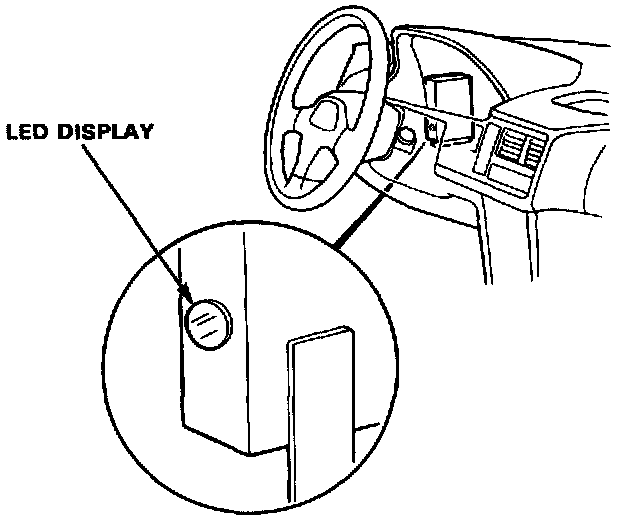

Displaying & Reading Trouble Codes
To Access trouble Codes:
For problem diagnosis, count the number of blinks from the LED display with ignition key ON, and refer to Trouble Code Descriptions.
Since the LED problem code is retained in memory, it will blink again whenever the ignition key is turned on. If the LED problem code is not memorized, check the following causes:
- Check the Alternator Sensor fuse (10A) in the under-hood relay box.
- Check for an open circuit in the WHT/VEL wire between the Alternator Sensor fuse (10A) and A/T control unit B12 terminal.
After making repair, disconnect the Alternator Sensor fuse (10A) in the under-hood relay box for more than ten seconds to reset LED display memory.